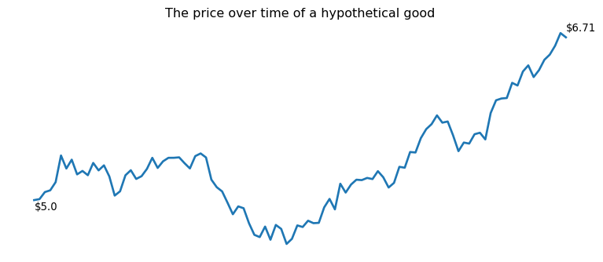

A Bayesian decision theory workflow
The art of PyTensor and reusable model components.
The Bayesian framework appeals to my sense of tidiness. Model building, inference, and decision-making are all conceptually separate activities. You are permitted to think hard about each and solve them in isolation. In scientific teams, you can even have different people working on each part and each person progresses at a different pace. The inference person doesn’t need to know whether the model is a reasonable representation of reality; they can still find a parameterization or a sampler that is efficient and accurate. The decision-making person doesn’t need to know whether the posterior is any good. They can still figure out the expected utility of various actions, given that posterior, and write an optimization algorithm to find the best actions. (It is a nice contrast to some Frequentist practices where inference, model, and decision-making are conceptually entangled: a significance test is a procedure for making decisions, rather than a procedure for forming beliefs, and a utility function is invoked to justify the inference algorithm1.)
The tidy division of labour often falls apart at the software level. While conceptually separate activities, they are not practically separate. Each party needs to have some code-based representation of the model that they can work on. All of those representations need to stay in sync: if the modeler decides to change something, the inference person, and the decision-making person also need to update their code. It gets worse as the project goes on longer. Just as the final touches are put on the decision-making algorithm, the data engineering team reports some of the data was wrong, and the modelers need to rethink some of their decisions. That, in turn, means the underlying function that we are trying to optimize also changes. This unfortunate state of affairs is the normal case. Teams, as a rule, try to continuously iterate and respond to feedback. Data changes as more is collected, or quality concerns are discovered2. So everyone stays busy keeping their code in sync with everyone else’s and the project never quite finishes.
The promise of probabilistic programming languages (PPLs) is that they can enforce a clean division of labour at the code level between modeling and inference. So long as the modeling code is written in this language3, they can just be dropped into an inference algorithm and the computer goes brrr. Decision-making, however, has not yet received the same care4. What often has to happen is that someone takes the posterior output by the PPL as data and then rewrites the model in some language amenable to a numerical optimizer.
Enter PyTensor. It offers a clean division of labour at the software level between the decision-making algorithm and the rest. There is a workflow I’ve become quite fond of where you can extract optimizable functions out of PyMC models while being (mostly) agnostic to which specific operations comprise the model. This lets you make independent decisions about how much utility to assign to certain actions, which numerical optimizer is appropriate, and where the decision problem departs from the inference problem. I’ll unpack how all that works with a simple problem: what is the profit-maximizing price of a good?
Define a model, simulate data, do inference with a few lines of code
Our intrepid consumer good changes price every day5.
In PyMC, we write the basic dynamics of the relationship between price and demand. We expect that relationship to be multiplicative - we think about it in terms of doubling and halving rather than adding and subtracting. For example, you might think that if you double the price, you will cut demand in half. Or, if you cut price in half, demand doubles. One function that could capture that sort of relationship is:
\[y = ax^b\]
where \(y\) is demand, \(a\) is baseline demand, \(b\) is the elasticity and \(x\) is price. So the elasticity that captures our doubling relationships is -1.
# dividing by the mean is like subtracting the mean in additive
# models - it decorrelates intercept and predictor
prices_centered = prices / np.mean(prices)
with pm.Model() as model:
a = pm.Gamma("a", mu=100, sigma=40)
b = pm.Normal("b", mu=0, sigma=1)
sigma = pm.HalfNormal("sigma", sigma=1)
prices_pt = pm.Data('x',prices_centered)
mu = pm.Deterministic('mu',a * prices_pt ** b)
y = pm.Normal("sales", mu=mu, sigma=sigma)We can generate some hypothetical sales data under the assumption that baseline demand is 100 goods per day and the price elasticity is -1.1. At that elasticity, halving price will do a bit more than double sales.
a_true = 100
b_true = -1.1
intervention_model = pm.do(model,{'a':a_true,'b':b_true})
observed_sales = pm.draw(intervention_model.sales)Train a model. Get a posterior.
with pm.observe(model,{"sales":observed_sales}):
trace = pm.sample(nuts_sampler="nutpie",progressbar=False)Confirm, for good measure, that the posterior contains the true parameter values.
| mean | sd | hdi_3% | hdi_97% | mcse_mean | mcse_sd | ess_bulk | ess_tail | r_hat | |
|---|---|---|---|---|---|---|---|---|---|
| a | 99.998 | 0.006 | 99.986 | 100.009 | 0.0 | 0.0 | 5721.0 | 3442.0 | 1.0 |
| b | -1.101 | 0.001 | -1.102 | -1.100 | 0.0 | 0.0 | 5691.0 | 3299.0 | 1.0 |
While we know the true parameters, for optimization, we are going to pretend that all we know are the posterior distributions. That’s the core of Bayesian decision theory - find the action that maximizes expected utility by averaging over uncertainty in the utility function.
Build bespoke optimizers out of model components
PyTensor is a peculiar package. It sits somewhere in between a symbolic computing library (like SymPy) and a compiler + autodiff library (like JAX). The neat thing about it is that you represent your model symbolically, as a tree of operations. Take the expression:
\[(a + b) * (c + d)\]
We can think of it as a tree. The trunk is the final result. The trunk branches in two. Each side represents one side of the multiplication. On the left branch, you have the result of the addition \(a + b\). The addition is also a branch and has two leaves: \(a\) and \(b\). When doing these sorts of problems in grade school, you learn to start with the leaves and do the additions. Then you work your way down toward the trunk, by doing the multiplications. PyTensor represents variables and operations with this weird little visual:
Mul [id A]
├─ Add [id B]
│ ├─ a [id C]
│ └─ b [id D]
└─ Add [id E]
├─ c [id F]
└─ d [id G]If you stare at the 1980s printer paper output for long enough, you’ll see the tree logic described above.
The elegance of PyTensor is that, once you have this abstract representation of the model, you can reuse it in various ways. Compile functions out of sub-parts of the tree, delete operations, insert operations, replace variables with numbers. Replace numbers with variables. This facilitates the desired division of labour because you can define the core logic of the model in one place (where the modeler works) and then you can reuse that core logic all over a project while retaining the flexibility to make small modifications.
The PyMC model is also a PyTensor tree. It looks hideous, but I don’t make the rules.
normal_rv{"(),()->()"}.1 [id A] 'sales'
├─ RNG(<Generator(PCG64) at 0x206DCC2D2A0>) [id B]
├─ NoneConst{None} [id C]
├─ Identity [id D] 'mu'
│ └─ Mul [id E]
│ ├─ ExpandDims{axis=0} [id F]
│ │ └─ gamma_rv{"(),()->()"}.1 [id G] 'a'
│ │ ├─ RNG(<Generator(PCG64) at 0x206DCC2DA80>) [id H]
│ │ ├─ NoneConst{None} [id C]
│ │ ├─ Mul [id I]
│ │ │ ├─ 6.25 [id J]
│ │ │ └─ Sign [id K]
│ │ │ └─ 40 [id L]
│ │ └─ Reciprocal [id M]
│ │ └─ 0.0625 [id N]
│ └─ Pow [id O]
│ ├─ x [id P]
│ └─ ExpandDims{axis=0} [id Q]
│ └─ normal_rv{"(),()->()"}.1 [id R] 'b'
│ ├─ RNG(<Generator(PCG64) at 0x206DCC2E420>) [id S]
│ ├─ NoneConst{None} [id C]
│ ├─ 0 [id T]
│ └─ 1 [id U]
└─ ExpandDims{axis=0} [id V]
└─ halfnormal_rv{"(),()->()"}.1 [id W] 'sigma'
├─ RNG(<Generator(PCG64) at 0x206DCC2D9A0>) [id X]
├─ NoneConst{None} [id C]
├─ 0.0 [id Y]
└─ 1 [id Z]To find the optimal price, we need to do a few things. Each of the things shows off a different way to reuse-while-modifying model components.
- Build a profit function. Right now, we only have a function for demand. But it is no good optimizing for demand though. That’s trivia - set price to 0 and the goods will fly off the shelf. To calculate profit, we need to introduce some notion of unit cost.
- Replace the random variables with posterior information. We only have samples from the posterior so those variables with the ugly
Generatorneed to go and vectors of samples need to come. - Modify the function so we can take the expectation over posterior samples. We want the expected utility rather than the distribution of possible utilities.
- Replace the observed price with some optimizable variable.
Here’s step one: we are adding some operations under the root of the tree to generate a profit function.
# convert demand function to profit function
# unit_profit = unit_price - unit_cost
# total_profit = unit_profit * demand
# c is the unit_cost
c = pt.as_tensor(0.3)
unit_profit = (model.x - c)
# model.mu is the demand
objective = unit_profit * model.mu
# flip sign for optimization
objective = -1 * objectiveHere’s step two: we are replacing all the random variables with posterior samples.
from pymc import vectorize_over_posterior
objective = vectorize_over_posterior(
outputs = [objective],
posterior = trace.posterior,
input_rvs=[model.a,model.b]
)[0]Step three is adding an expectation underneath the profit function. So we have a tree for the expected profit now.
objective = pt.mean(objective)In step four, we replace the observed spend data with the optimizable variable.
from pytensor.graph import graph_replace
optimizable_x = pt.dvector('opt_x')
objective = graph_replace(objective,replace={model.x:optimizable_x})Finally, we can do neat things like get the gradients of our new function and compile both of them into efficient C code.
# build gradient and objective function
objective_grad = pt.grad(objective, wrt=optimizable_x)
objective_fn = pytensor.function([optimizable_x], [objective, objective_grad])I’m happy to admit all the above procedure looks fairly strange. It is deeply unintuitive if you come from the world of NumPy computing where everything is either a number or a function. This lets abstract over numbers and functions to operate on sequences of computations. The payoff is that you can simply plug your hard work into the SciPy optimizer and it tells you to lower the price, by a couple bucks.
from scipy.optimize import minimize
res = minimize(
objective_fn,
jac=True,
x0 = [1.00],
bounds = [(0, None)]
)
print("optimal price: ", res.x[0])optimal price: 3.275488346343822Write optimizers that are semi-agnostic to the functions they are optimizing
The workflow presented above captures the desiderata we are after. The person coding up the decision-making algorithm doesn’t have to know all the details of how sales are modeled. They just need to know an entry point into the tree (the optimizable price variable) and the endpoint (the sales variable). If the modeling team makes changes in between those two points, our abstraction will automatically pick up on those. Maybe they want to add controls, cross-price elasticities, or transform the price data in unusual ways. The decision-making team retains the capacity to modify the computational tree: adding a cost variable, generating a profit function, flipping the sign of the function and inserting an expectation operation.
This price elasticity model is fairly simple. You don’t need a numerical optimizer to find a solution. It is trivial to duplicate the core logic of the model in two places. However, as models grow in size and complexity, the decision-making team will appreciate not having to keep track of every change or experiment in the core model logic. Meanwhile, they can quickly experiment with the logic that is core to the optimizer. They can experiment with different numerical solvers. When the modeling team finally wraps up their work, the chosen solver is already ready to go. They can also work with business expertise to build custom utility functions or incorporate notions of risk-aversion. Going out of business is a problem you cannot come back from so it is worth prioritizing that over other goals, like doubling profits. The decision-making team can work out the logic and code for risk-averse optimization without knowing exactly where the modeling team will land. Utility and probability are conceptually distinct, and we need our workflows to mirror these distinctions.
Footnotes
As usual, I confess I don’t understand what frequentists actually do. But I gather that setting an alpha level is justified by comparing the utility of type 1 and type 2 errors. Those utilities only make sense if you think there is some bad thing that results if you act on the basis of a false positive.↩︎
Nobody even knows their data is wonky until they start to model it so, rest assured, data quality issues will be discovered with each iteration cycle.↩︎
You can imagine the pain points here: maybe the model was written 30 years ago in Fortran and nobody is brave enough to rewrite it in Stan.↩︎
You can see an example on the Stan documentation. It is doable in pure Stan but they also picked an easy problem. The utility of each outcome is a quantity that can be calculated as a by-product of things you already compute during inference. There are 4 discrete actions to try and they have data on each of them. My decision theory problems are not this easy. If you have a continuous action space, the optimal action may not have been explored in the training data and you are not going to get utilities as a by-product of inference.↩︎
It is one of these consumer-facing software companies where they let the data scientists do the financials.↩︎